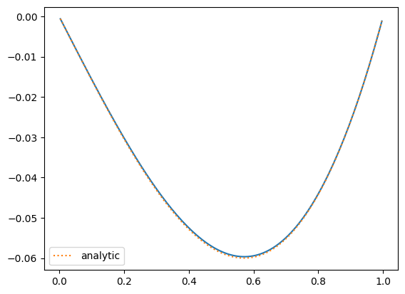

import numpy as np
import matplotlib.pyplot as plt
Two Grid Correction#
Before we do multigrid, we can understand the basic flow by using 2 grids: a fine and coarse grid.
We want to solve:
with suitable boundary conditions. Imagine that we have a approximate solution, \(\tilde{\phi}\), then we can define the error with respect to the true solution, \(\phi^{\mathrm{true}}\) as:
Our Poisson equation is linear, so we can apply the \(\nabla^2\) operator to our error:
This since \(\tilde{\phi}\) is just our approximation to \(\phi^{\mathrm{true}}\), this is just the residual, so:
Notice that this is the same type of equation as our original equation. But the boundary conditions are now homogeneous (of the same type as the original) regardless of whether they were inhomogeneous or homogeneous originally. For example:
If the BCs were inhomogenous Dirichlet, \(\phi(a) = A\), then
\[e(a) = \phi^{\mathrm{true}}(a) - \tilde{\phi}(a) = 0\]since both the true solution and our approximation satisfy the same boundary conditions.
Likewise, if the BCs were inhomogenous Neumann, \(\phi^\prime(a) = C\), then
\[e^{\prime}(a) = \phi^{\mathrm{true},\prime}(a) - \tilde{\phi}^{\prime}(a) = 0\]
The key idea in multigrid is that long wavelength errors take longer to smooth away. But long wavelength errors look shorter wavelength on a coarser grid. This suggests that we smooth a bit on a fine grid to get rid of the short wavelength errors and then transfer down to a coarser grid, and smooth the error equation there, and then bring the error back to the fine grid to correct the fine grid solution.
We’ll use the superscript \(h\) to represent the fine grid and the superscript \(2h\) to represent a grid that is coarser by a factor of 2.
Here’s the basic flow:
Smooth for \(N_\mathrm{smooth}\) iterations on the fine grid, solving \(\nabla^2 \phi = f\) to get an approximation \(\tilde{\phi}\)
Compute the residual, on the fine grid:
\[r^h = f - \nabla^2 \tilde{\phi}\]Restrict \(r^h\) to the coarse grid:
\[r^{2h} \leftarrow r^h\]Solve the error equation on the coarse grid:
\[\nabla^2 e^{2h} = r^{2h}\]Prolong the error from the coarse grid up to the fine grid:
\[e^{2h} \rightarrow e^{h}\]Correct the fine grid solution, since by the definition of \(e\), \(\phi^{\mathrm{true}} = \tilde{\phi} + e\)
\[\tilde{\phi}^h \leftarrow \tilde{\phi}^h + e^h\]This correction may have introduced some short wavelength noise (from the prolongation), so smooth \(\nabla^2 \phi = f\) on the fine grid for \(N_\mathrm{smooth}\) iterations.
For now, to solve the error equation, we’ll resort to simply smoothing until all of residual is below our desired tolerance. In a little bit though, we’ll see that we can just do this procedure recursively for that step.
We’ll start with a grid class that has storage for the solution, righthand side, and residual, and knows how to fill boundary conditions, prolong, and restrict the data, and all of the operations we implemented previously (restriction, prolongation, computing the residual, taking the norm).
We store the solution variable (\(\phi\) or \(e\)) as Grid.v in this class.
import grid
%cat grid.py
import numpy as np
class Grid:
def __init__(self, nx, ng=1, xmin=0, xmax=1,
bc_left_type="dirichlet", bc_left_val=0.0,
bc_right_type="dirichlet", bc_right_val=0.0):
self.xmin = xmin
self.xmax = xmax
self.ng = ng
self.nx = nx
self.bc_left_type = bc_left_type
self.bc_left_val = bc_left_val
self.bc_right_type = bc_right_type
self.bc_right_val = bc_right_val
# python is zero-based. Make easy intergers to know where the
# real data lives
self.ilo = ng
self.ihi = ng+nx-1
# physical coords -- cell-centered
self.dx = (xmax - xmin)/(nx)
self.x = xmin + (np.arange(nx+2*ng)-ng+0.5)*self.dx
# storage for the solution
self.v = self.scratch_array()
self.f = self.scratch_array()
self.r = self.scratch_array()
def scratch_array(self):
"""return a scratch array dimensioned for our grid """
return np.zeros((self.nx+2*self.ng), dtype=np.float64)
def norm(self, e):
"""compute the L2 norm of e that lives on our grid"""
return np.sqrt(self.dx * np.sum(e[self.ilo:self.ihi+1]**2))
def compute_residual(self):
"""compute and store the residual"""
self.r[self.ilo:self.ihi+1] = self.f[self.ilo:self.ihi+1] - \
(self.v[self.ilo+1:self.ihi+2] -
2 * self.v[self.ilo:self.ihi+1] +
self.v[self.ilo-1:self.ihi]) / self.dx**2
def residual_norm(self):
"""compute the residual norm"""
self.compute_residual()
return self.norm(self.r)
def source_norm(self):
"""compute the source norm"""
return self.norm(self.f)
def fill_bcs(self):
"""fill the boundary conditions on phi"""
# we only deal with a single ghost cell here
# left
if self.bc_left_type.lower() == "dirichlet":
self.v[self.ilo-1] = 2 * self.bc_left_val - self.v[self.ilo]
elif self.bc_left_type.lower() == "neumann":
self.v[self.ilo-1] = self.v[self.ilo] - self.dx * self.bc_left_val
else:
raise ValueError("invalid bc_left_type")
# right
if self.bc_right_type.lower() == "dirichlet":
self.v[self.ihi+1] = 2 * self.bc_right_val - self.v[self.ihi]
elif self.bc_right_type.lower() == "neumann":
self.v[self.ihi+1] = self.v[self.ihi] - self.dx * self.bc_right_val
else:
raise ValueError("invalid bc_right_type")
def restrict(self, comp="v"):
"""restrict the data to a coarser (by 2x) grid"""
# create a coarse array
ng = self.ng
nc = self.nx//2
ilo_c = ng
ihi_c = ng + nc - 1
coarse_data = np.zeros((nc + 2*ng), dtype=np.float64)
if comp == "v":
fine_data = self.v
elif comp == "f":
fine_data = self.f
elif comp == "r":
fine_data = self.r
else:
raise ValueError("invalid component")
coarse_data[ilo_c:ihi_c+1] = 0.5 * (fine_data[self.ilo:self.ihi+1:2] +
fine_data[self.ilo+1:self.ihi+1:2])
return coarse_data
def prolong(self, comp="v"):
"""prolong the data in the current (coarse) grid to a finer (factor
of 2 finer) grid using linear reconstruction.
"""
if comp == "v":
coarse_data = self.v
elif comp == "f":
coarse_data = self.f
elif comp == "r":
coarse_data = self.r
else:
raise ValueError("invalid component")
# allocate an array for the coarsely gridded data
ng = self.ng
nf = self.nx * 2
fine_data = np.zeros((nf + 2*ng), dtype=np.float64)
ilo_f = ng
ihi_f = ng + nf - 1
# slopes for the coarse data
m_x = self.scratch_array()
m_x[self.ilo:self.ihi+1] = 0.5 * (coarse_data[self.ilo+1:self.ihi+2] -
coarse_data[self.ilo-1:self.ihi])
# fill the '1' children
fine_data[ilo_f:ihi_f+1:2] = \
coarse_data[self.ilo:self.ihi+1] - 0.25 * m_x[self.ilo:self.ihi+1]
# fill the '2' children
fine_data[ilo_f+1:ihi_f+1:2] = \
coarse_data[self.ilo:self.ihi+1] + 0.25 * m_x[self.ilo:self.ihi+1]
return fine_data
We also need the relax function we wrote previously. Here we just paste it below:
class TooManyIterations(Exception):
pass
def relax(g, tol=1.e-8, max_iters=200000):
iter = 0
fnorm = g.source_norm()
if fnorm == 0.0:
fnorm = tol
r = g.residual_norm()
if tol is None:
test = iter < max_iters
else:
test = iter < max_iters and r > tol * fnorm
g.fill_bcs()
while test:
g.v[g.ilo:g.ihi+1:2] = 0.5 * (-g.dx * g.dx * g.f[g.ilo:g.ihi+1:2] +
g.v[g.ilo+1:g.ihi+2:2] + g.v[g.ilo-1:g.ihi:2])
g.fill_bcs()
g.v[g.ilo+1:g.ihi+1:2] = 0.5 * (-g.dx * g.dx * g.f[g.ilo+1:g.ihi+1:2] +
g.v[g.ilo+2:g.ihi+2:2] + g.v[g.ilo:g.ihi:2])
g.fill_bcs()
r = g.residual_norm()
iter += 1
if tol is None:
test = iter < max_iters
else:
test = iter < max_iters and r > tol * fnorm
if tol is not None and iter >= max_iters:
raise TooManyIterations(f"too many iterations, niter = {iter}")
Now we can write our two-grid solver. We’ll solve the same system as before:
on \([0, 1]\) with homogeneous Dirichlet BCs.
def analytic(x):
return -np.sin(x) + x * np.sin(1.0)
def f(x):
return np.sin(x)
nx = 128
n_smooth = 10
# create the grids
fine = grid.Grid(nx)
coarse = grid.Grid(nx//2)
# initialize the RHS
fine.f[:] = f(fine.x)
# smooth on the fine grid
relax(fine, max_iters=n_smooth, tol=None)
# compute the residual
fine.compute_residual()
# restrict the residual down to the coarse grid as the coarse rhs
coarse.f[:] = fine.restrict("r")
# solve the coarse problem:
relax(coarse, tol=1.e-8)
# prolong the error up from the coarse grid and correct the fine grid solution
fine.v += coarse.prolong("v")
# smooth on the fine grid
relax(fine, max_iters=n_smooth, tol=None)
Let’s look at the solution:
fig = plt.figure()
ax = fig.add_subplot(111)
ax.plot(fine.x[fine.ilo:fine.ihi+1], fine.v[fine.ilo:fine.ihi+1])
ax.plot(fine.x[fine.ilo:fine.ihi+1], analytic(fine.x[fine.ilo:fine.ihi+1]), label="analytic", ls=":")
ax.legend()
<matplotlib.legend.Legend at 0x7f5bdc0d00a0>
